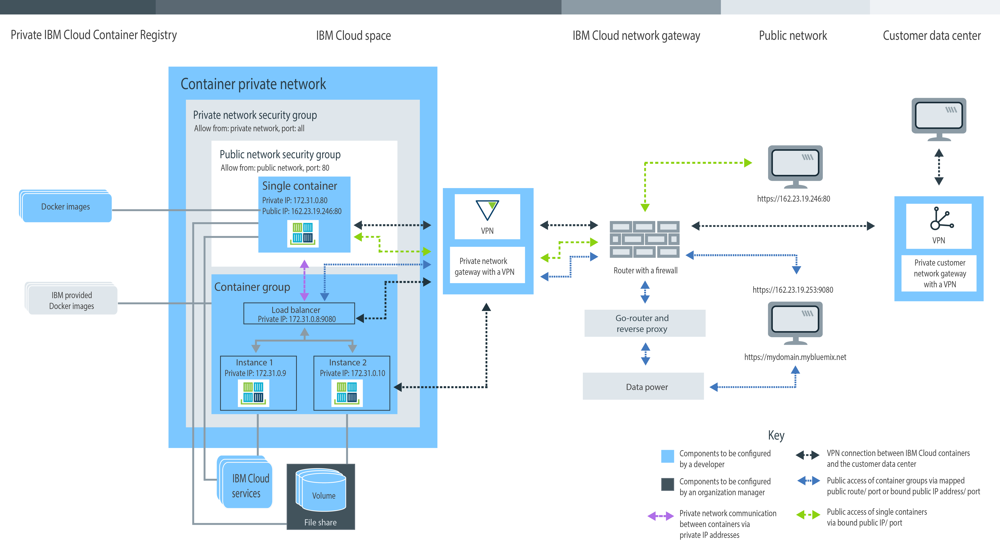

Planification de l'utilisation d'conteneurs uniques et évolutifs
• Gestion de votre organisation
Bluemix pour
les groupes de conteneurs uniques et évolutifs
• Configuration d'un espace de nom pour votre registre Bluemix privé
• Quota et types de compte Bluemix disponibles
• Configuration du stockage persistant
• Création de groupes de conteneurs uniques et évolutifs dans IBM Bluemix Container Service
• Interface graphique utilisateur, interface de ligne de commande ou API REST Bluemix
• Images IBM publiques, Docker Hub et privées
• Paramètres de réseau privé d'un conteneur
• Paramètres de réseau public
• Intégration des services Bluemix
• Options de stockage de données persistantes
• Types de conteneur
• Surveillance et journalisation
Présentation des rôles utilisateur
Les conteneurs sont gérés par les responsables de l'organisation et les développeurs de conteneur. L'image suivante illustre un exemple de configuration de conteneur d'une organisation. Elle met en évidence les composants qui peuvent être définis par le responsable de l'organisation ou le développeur de conteneur. 
Passez en revue les sous-sections de cette rubrique pour plus d'informations sur chaque composant et sur les décisions et les configurations que vous pouvez adopter. Certaines de ces configurations ne peuvent plus être modifiées après la création d'un conteneur. Le fait de connaître ces configurations à l'avance vous permet de faire en sorte que toutes les ressources, telles que la mémoire, l'espace disque et les adresses IP, soient disponibles pour l'équipe de développement, et de maximiser l'utilisation de votre quota d'organisation.Gestion de votre organisation Bluemix pour IBM Bluemix Container Service
Dans Bluemix, vous pouvez utiliser des organisations pour permettre la collaboration entre membres d'équipes et faciliter le regroupement logique de ressources de cloud dans un projet. A chaque organisation est affecté un responsable qui est chargé de mettre en place les environnements de développement (espaces) et d'accorder aux membres des équipes un accès aux ressources de cloud requises pour créer des conteneurs pour leurs applications. Cette configuration inclut l'affectation d'adresses IP publiques, de stockage de données et de mémoire de conteneur. En tant que responsable d'une organisation, vous pouvez également examiner le quota actuel et l'utilisation des ressources de cloud, et les ajuster en cas de besoin.
- Affectez des responsables de l'organisation en attribuant à un utilisateur le rôle responsable dans l'organisation.
- Affectez des créateurs de conteneur en attribuant à un utilisateur le rôle développeur ou auditeur dans l'espace.
Définition de l'espace de nom de votre organisation pour votre registre Bluemix privé
Pour pouvoir stocker et gérer des images privées pour IBM Bluemix Container Service, chaque organisation doit configurer son propre registre d'images Docker privé dans Bluemix. Ce nom du registre privé est dénommé espace de nom et doit être unique dans Bluemix.
Prenez en compte les règles décrites ci-après lorsque vous choisissez un espace de nom pour votre organisation.
- Votre espace de nom doit être unique dans Bluemix.
- Votre espace de nom doit comporter de 4 à 30 caractères.
- Votre espace de nom doit débuter par au moins une lettre ou un nombre.
- Votre espace de nom ne peut contenir que des caractères en minuscules, des nombres ou des traits de soulignement (_).
Dans l'interface graphique Bluemix, exécutez les étapes décrites ci-après.
Depuis l'interface CLI, exécutez la commande suivante après vous être connecté à IBM Bluemix Container Service:
Extraction de l'espace de nom de votre organisation
Si un espace de nom a déjà été défini pour votre organisation, vous pouvez l'extraire depuis l'interface graphique Bluemix ou l'interface de ligne de commande.
Dans l'interface graphique Bluemix, exécutez les étapes décrites ci-après.
Depuis l'interface CLI, connectez-vous à IBM Bluemix Container Service et lancez la commande suivante.
Quota et comptes Bluemix
Chaque organisation dans Bluemix a une valeur prédéfinie pour la mémoire du conteneur, les adresses IP publiques, les partages de fichiers, et le nombre de services partagés par tous les espaces de l'organisation. Ces valeurs prédéfinies sont dénommées quota.
Types de compte Bluemix
| Type de compte | Description |
|---|---|
| Compte d'essai gratuit | Des comptes d'essai gratuits ne sont pas disponibles pour conteneurs uniques et évolutifs. Découvrez la gestion de cluster et migrez vers Kubernetes dans IBM Bluemix Container Service sur Bluemix Public. |
| Paiement à la carte | Si vous créez un compte de type Paiement à la carte, vous ne payez que pour les ressources Bluemix que vous utilisez. |
| Abonnement | Si vous créez un compte de type Abonnement, vous vous engagez à dépenser un montant minimal par mois et bénéficiez d'une remise sur votre abonnement qui est appliquée à ce montant minimal. Vous payez également toute utilisation dépassant le montant minimal. |
| Bluemix dédié | Pour le type de compte Bluemix Dedicated, vous devez vous engager pour une période d'au moins 1 an. Le prix que vous payez chaque mois au cours de cet engagement dépend des services dédiés que vous choisissez, et inclut un compte d'abonnement qui vous permet d'accéder à tous les services publics. |
| Bluemix local | Pour le type de compte Bluemix Local, vous devez vous engager pour une période d'au moins 1 an. Le prix que vous payez chaque mois au cours de cet engagement dépend des services locaux que vous choisissez, et inclut un compte d'abonnement qui vous permet d'accéder à tous les services publics. |
Quota par défaut pour les comptes payants
| Ressource | Limites de quota des comptes payants |
|---|---|
| Adresses IP publiques | 64 |
| Mémoire allouée au conteneur | 64 Go Remarque : Chaque conteneur dans votre espace est comptabilisé dans l'utilisation du quota, que le conteneur soit en opération ou non. Pour libérer de la
mémoire, vous devez supprimer des conteneurs inutilisés.
|
| Partages de fichiers | 10 partages de fichiers |
| Conteneurs et groupes de conteneurs | Nombre illimité Remarque : La taille de votre conteneur et de vos groupes de conteneurs est prise en compte pour le plafonnement de mémoire de vos conteneurs,
mais vous n'êtes pas limité à un nombre de conteneurs spécifique.
|
| Images | 25 Remarque : Les images IBM ne sont pas comptabilisées dans votre limite d'images dans votre registre Bluemix privé.
|
| Espaces | Nombre illimité Remarque : Chaque espace requiert au moins 2 adresses IP publiques, 2 Go de mémoire conteneur
qui sont automatiquement alloués lorsque vous vous connectez à un nouvel espace et tentez de l'utiliser avec
IBM
Bluemix Container Service. Ces ressources sont comptabilisées dans l'utilisation de votre
quota, mais vous n'êtes pas limité à un nombre d'espaces spécifique.
|
Allocation de quota à un espace
- Depuis les détails de compte, dans la section de gestion des organisations, sélectionnez une organisation.
- Dans la section des quotas, affichez les détails des conteneurs.
- Dans le tableau Allocation de quota, changez le quota alloué par espace en cliquant sur le bouton Editer.
- Enregistrez vos modifications en cliquant sur le bouton Sauvegarder.
Conseils afin d'optimiser l'utilisation de votre quota
- Assurez-vous de supprimer des conteneurs qui ne sont pas en cours d'utilisation, de sorte que leurs configurations ne soient pas comptabilisées dans votre quota. Pour plus d'informations, voir Suppression de conteneurs uniques, Suppression de groupes de conteneurs, et Suppression d'une application multi-conteneur.
- Ne liez pas une adresse IP publique à votre conteneur si celui-ci ne doit pas être accessible depuis Internet.
- Pour réduire l'utilisation d'adresses IP publiques, envisagez d'utiliser des groupes de conteneurs au lieu d'un conteneur unique. Les groupes de conteneurs utilisent une route pour accès public qui n'est pas sujette au quota d'adresses IP. Pour plus d'informations, voir Exécution de services de longue durée en tant que groupes de conteneurs à partir de l'interface graphique Bluemix.
Stockage de données persistantes
Le responsable de l'organisation peut créer des partages de fichiers dotés d'une taille de stockage et d'un nombre d'IOPS spécifiques pour répondre aux besoins de l'espace. Des partages de fichiers peuvent être alloués avec une taille allant de 20 Go à 12 To et un nombre d'IOPS par Go de 0,25, 2 ou 4. La taille du partage de fichiers par rapport au nombre d'IOPS a une incidence sur la vitesse de lecture et d'écriture possible des données depuis et vers le volume de conteneur.
Création de conteneurs à l'aide d'IBM Bluemix Container Service dans Bluemix
Pour créer des conteneurs qui exécutent votre application à l'aide d'IBM Bluemix Container Service dans Bluemix, vous devez disposer de prérogatives de développeur dans votre espace d'organisation. En tant que développeur d'applications, vous devez savoir comment les composants du conteneur sont associés et comment vous pouvez modifier la configuration d'un conteneur pour répondre aux exigences fonctionnelles et non fonctionnelles de votre application.
Interface graphique Bluemix, ligne de commande et API REST
Lorsque vous prévoyez d'utiliser IBM Bluemix Container Service, vous pouvez installer l'interface graphique d'Bluemix, installer l'interface de ligne de commande (CLI), ou envoyer des demandes HTTP via l'API REST pour accéder à IBM Bluemix Container Service.
Vous pouvez utiliser l'interface graphique Bluemix et l'interface de ligne de commande pour effectuer la grande majorité des tâches dans IBM Bluemix Container Service. Toutefois, certaines tâches ne peuvent être réalisées que via l'interface graphique Bluemix ou l'interface de ligne de commande. Vous devez donc être capable d'utiliser les deux pour gérer vos conteneurs.
Si vous ne souhaitez pas utiliser l'interface graphique Bluemix ni l'interface de ligne de commande, vous pouvez envoyer des demandes HTTP directement au serveur d'API IBM Bluemix Container Service pour gérer vos conteneurs à l'aide de REST.
Le tableau suivant contient toutes les tâches liées aux conteneurs qui nécessitent l'interface graphique Bluemix, l'interface de ligne de commande IBM Bluemix Container Service ou l'API REST. Les tâches non répertoriées dans ce tableau peuvent être effectuées en utilisant toutes les méthodes.| Tâche | Interface graphique | Interface de ligne de commande | API |
|---|---|---|---|
| Examen des vulnérabilités d'une image |  |
 |
|
| Envoi d'images par commande push dans un registre | |
|
|
| Extraction d'images depuis un registre | |
|
|
| Copie d'images depuis Docker Hub | |
|
|
| Modification d'allocation de quota | |
|
|
| Extraction de quota spécifique aux organisations et à l'espace | |
|
|
| Visualisation des informations de journal détaillées | |
|
|
| Spécification de journaux supplémentaires | |
|
|
| Personnalisation de journaux | |
|
|
| Connexion à un conteneur en cours d'exécution | |
|
|
| Utilisation de Docker Compose | |
|
|
| Affichage de la liste des volumes d'un espace | |
|
|
| Ecriture de fichiers sur un volume | |
|
|
| Suppression d'un volume | |
|
|
| Extraction de messages système | |
|
|
Installation de l'interface de ligne de commande
Installez et configurez votre interface de ligne de commande IBM Bluemix Container Service pour gérer vos conteneurs depuis l'interface de ligne de commande.
Gestion de conteneurs via l'API REST
Vous pouvez utiliser l'API IBM Bluemix Container Service pour gérer vos conteneurs et groupes de conteneurs via REST.
Images IBM publiques, Docker Hub et privées
Une image de conteneur est la base de chaque conteneur que vous créez. Une image est créée à partir d'un fichier Dockerfile, qui contient les instructions de génération de l'image, ainsi que des artefacts de construction, tels que la configuration de l'application et ses dépendances. Vous pouvez assimiler une image de conteneur à un fichier exécutable (.exe ou .bin). Dès que vous lancez le fichier exécutable d'une application, vous créez une instance de votre application. Lorsque vous exécutez un conteneur, vous créez une instance de conteneur à partir de l'image. Les images de conteneur sont stockées dans votre registre Bluemix privé et ne peuvent être ajoutées que depuis l'interface de ligne de commande (CLI). Chaque image de conteneur que vous désirez utiliser doit être présente dans le registre pour que vous puissiez créer un conteneur depuis celle-ci.
- Images IBM publiques
- Commencez avec l'une des images IBM publiques fournies par IBM Bluemix Container Service, telles que les images IBM Liberty et IBM Node, pour tester les fonctions d'IBM Bluemix Container Service. Vous pourrez ensuite utiliser l'une de ces images comme image parente, modifier le fichier Dockerfile et construire votre propre image avec votre propre code d'application dans celle-ci.
- Images Docker Hub
- Copiez directement des images depuis Docker Hub vers votre registre Bluemix privé ou extrayez une image depuis Docker Hub, modifiez-la localement, puis construisez-la directement dans votre registre.
- Création de votre propre image
- Si vous disposez d'images de conteneur que vous utilisez déjà dans votre environnement Docker local, vous pouvez les transférer vers votre registre Bluemix afin de les utiliser dans IBM Bluemix Container Service. Vous pouvez également créer votre propre fichier Dockerfile, le construire, le tester sur le poste local, puis le transposer dans votre registre privé.
Visualisation des images de votre registre d'images privé
Vous pouvez visualiser toutes les images de conteneur disponibles dans votre registre d'images Bluemix privé à l'aide de l'interface graphique Bluemix ou de l'interface de ligne de commande.
- Dans l'interface graphique Bluemix, sélectionnez le catalogue, puis cliquez sur Conteneurs. Vous pouvez visualiser les images qui sont fournies par IBM et les images que vous avez précédemment envoyées par commande push dans votre registre Bluemix privé.
- Depuis l'interface de ligne de commande, exécutez bx ic images.
Examen des vulnérabilités d'une image
Lorsque vous ajoutez des images à votre registre Bluemix privé, elles sont automatiquement analysées par Vulnerability Advisor vis à vis des règles standard définies par le responsable de l'organisation et d'une base de données de problèmes Ubuntu connus. L'assistant examine les packages de l'inventaire, les configurations, les ports ouverts et les métadonnées Docker. Lorsque l'examen est terminé, vous pouvez consulter la liste des vulnérabilités potentielles et les résoudre si nécessaire avant d'utiliser l'image dans un conteneur. Selon les règles définies par le responsable de l'organisation, il se peut que le déploiement d'un conteneur depuis l'image soit bloqué ou qu'un avertissement soit notifié à l'utilisateur.
- Pour répertorier des vulnérabilités d'image, voir Examen de rapport sur une image.
- Pour définir des règles personnalisées dans votre organisation, voir Examen des règles de l'organisation.
Conseils Dockerfile visant à empêcher l'arrêt d'un conteneur
IBM Bluemix Container Service offre un grand nombre de fonctions permettant de maintenir les conteneurs sécurisés et de gérer des ressources de cloud pour l'utilisateur. Selon votre application, il peut s'avérer nécessaire d'ajouter des configurations à votre document Dockerfile pour faire en sorte que vos conteneurs locaux s'exécutent correctement dans Bluemix.
- Préparation du système aux délais réseau
- Au démarrage d'un conteneur, IBM Bluemix Container Service configure le réseau de conteneurs privé et affecte au conteneur une adresse IP privée. Ce processus peut prendre quelques secondes. Si votre application requiert une connexion réseau active au démarrage de l'application, vérifiez préalablement que la mise en réseau d'IBM Bluemix Container Service est terminée en ajoutant une commande sleep à votre document Dockerfile.
- Utilisation de commandes à exécution longue
- Pour maintenir un conteneur opérationnel, vous devez inclure au moins un processus interruptible dans l'image du conteneur. Par exemple, echo "Hello world" est un processus de courte durée. Si aucune autre commande n'est spécifiée dans l'image, le conteneur s'arrête une fois la commande exécutée. Pour transformer la commande echo "Hello world" en processus de longue durée, vous pouvez, par exemple, l'exécuter en boucle plusieurs fois ou inclure la commande echo dans un autre processus de longue durée dans votre application.
Paramètres de réseau privé d'un conteneur dans IBM Bluemix Container Service
Un réseau privé de conteneurs crée un environnement isolé et sécurisé pour les conteneurs uniques et les groupes de conteneurs s'exécutant dans un espace. Les conteneurs connectés au même réseau privé peuvent envoyer et recevoir des données d'autres conteneurs de ce réseau en utilisant les adresses IP privées. Les conteneurs ne sont pas accessibles au public tant qu'un port public et une adresse IP publique (pour les conteneurs uniques) ou une route publique (pour les groupes de conteneurs) ne leur ont pas été liés.
- Paramètres de réseau privé par défaut d'IBM Bluemix Container Service
- Dans Bluemix, chaque espace est déjà fourni avec un réseau privé de conteneurs qui applique les paramètres réseau IBM Bluemix Container Service par défaut. Ces paramètres incluent notamment la configuration automatique d'un groupe Private Network Security Group par défaut qui autorise une communication via un réseau privé entre des conteneurs et des groupes de conteneurs à l'aide d'adresses IP privées. Lorsque vous créez un conteneur ou un groupe de conteneurs dans un espace, ils sont automatiquement connectés au réseau IBM Bluemix Container Service privé par défaut et une adresse IP privée leur est affectée à partir du sous-réseau 172.31.0.0/16. Une fois qu'une adresse IP privée est affectée, tous les conteneurs présents dans un même réseau peuvent communiquer de manière sécurisée sur tous les ports de conteneur à l'aide de l'adresse IP privée du conteneur unique, ou, si un groupe de conteneurs est utilisé, à l'aide de l'adresse IP privée de l'équilibreur de charge du groupe. Le mappage des ports de conteneur à un port d'hôte n'est pas requis.
- Réseau privé virtuel permettant de connecter vos conteneurs à un centre de données d'entreprise
- Vous pouvez connecter de manière sécurisée les conteneurs uniques et les groupes de conteneurs
d'un réseau de conteneurs privé dans Bluemix à un centre de données d'entreprise à
l'aide du service IBM® Virtual Private Network (VPN). IBM
VPN fournit
un canal de communication de bout en bout sécurisé via Internet et basé sur l'ensemble de protocoles IPsec (Internet Protocol Security)
à la pointe du secteur. Le protocole IPsec permet une authentification d'homologue au niveau du réseau, l'intégrité et la confidentialité des données
via le chiffrement des packages échangés entre les noeuds finaux du réseau privé virtuel. Pour configurer une connexion sécurisée entre les conteneurs dans
Bluemix et un centre de données d'entreprise, vous devez disposer d'une passerelle de
réseau privé virtuel IPsec ou d'un serveur SoftLayer installés sur votre centre de données local. Via le service
IBM
VPN, vous pouvez configurer une passerelle de réseau privé virtuel par espace et définir
jusqu'à 16 connexions à des destinations différentes.
Pour configurer une connexion de réseau privé virtuel vers vos conteneurs dans Bluemix, voir IBM VPN.
Conseils relatifs au traitement des retards réseau lors du démarrage d'un conteneur
Au démarrage d'un conteneur, IBM Bluemix Container Service configure le réseau de conteneurs privé, expose les ports de conteneur et affecte au conteneur une adresse IP privée. Ce processus peut prendre quelques secondes. Si votre application requiert une connexion réseau active au démarrage de l'application, il se peut que le réseau de conteneurs privé ne soit pas encore opérationnel, ce qui peut provoquer un plantage de l'application. Pour garantir que la mise en réseau d'IBM Bluemix Container Service soit terminée avant le démarrage de l'application, vous pouvez implémenter l'une des solutions suivantes afin de traiter les retards réseau.
- Ajoutez une commande sleep au fichier Dockerfile exécuté au démarrage du conteneur.
Dans l'exemple Dockerfile ci-après, le conteneur patiente 60 secondes avant le démarrage de l'application.
FROM sdelements/lets-chat:latest CMD (sleep 60; npm start) - Adaptez votre code d'application afin de vérifier que la connectivité réseau est active (par exemple, en, exécutant une commande ping sur une adresse IP publique avant le démarrage de l'application). Si la commande ping n'aboutit pas, patientez quelques secondes, puis réessayez. Si l'adresse IP peut être résolue, démarrez l'application.
Détermination des paramètres du réseau public
Par défaut, chaque conteneur unique et groupe de conteneurs dans IBM Bluemix Container Service est accessible au réseau privé. Toutefois, votre application peut nécessiter une accessibilité depuis Internet ou vous pouvez vouloir accéder à des conteneurs dans d'autres espaces de votre organisation. Dans ces cas, vous devez exposer le conteneur au public. Selon le type de conteneur que vous choisissez, il existe différentes manières de rendre le conteneur accessible au public.
Paramètres de réseau public de conteneurs uniques et de Docker Compose
Tous les conteneurs uniques que vous créez dans votre espace se voient affecter une adresse IP privée que vous ne pouvez utiliser pour accéder aux conteneurs que depuis le réseau privé. La communication via le réseau privé est sécurisée par le groupe Private Network Security Group par défaut qui n'autorise aucun trafic réseau vers et depuis un réseau public. Si vous désirez rendre votre application disponible sur le réseau public, vous devez exposer un port public et lier une adresse IP publique à votre conteneur.
Les adresses IP publiques doivent être demandées pour un espace à lier à un conteneur. Lorsqu'une adresse IP publique est demandée, une adresse du pool d'adresses IP publiques est affectée à l'espace de manière aléatoire. Tant qu'elle est affectée à un espace, l'adresse IP n'est pas modifiée. Pour lier une adresse IP publique à un conteneur, vous devez également exposer un port HTTP en utilisant l'option -p dans la commande bx ic run. Lorsqu'un port est exposé, un Public Network Security Group est créé pour votre conteneur vous autorisant à envoyer et à recevoir des données publiques uniquement sur le port exposé. Tous les autres ports publics sont fermés et ne peuvent pas être utilisés pour accéder à votre application depuis Internet.
Le nombre d'adresses IP publiques disponibles dans un espace dépend du quota alloué à votre organisation.
bx ic ips- Aucune adresse IP publique disponible dans l'espace
- Sortie CLI :
Adresse IP ID conteneur - Options :Demander une nouvelle adresse IP publique et la lier à votre conteneur.
bx ic ip-requestbx ic ip-bind <ADRESSE_IP> <CONTENEUR>
- Sortie CLI :
- Adresse IP publique disponible dans l'espace et non liée à un conteneur
- Sortie CLI :
Adresse IP ID conteneur... 192.0.2.56 - Options :Lier l'adresse IP publique à votre conteneur.
bx ic ip-bind <ADRESSE_IP> <CONTENEUR>
- Sortie CLI :
- Adresse IP publique disponible dans l'espace mais déjà liée à un conteneur
- Sortie CLI :
Adresse IP ID conteneur 192.0.2.56 d7b4a167-8e51-4b16-b591-1a17cb7ee41f - Options :
- Annuler la liaison d'une adresse IP à un conteneur et la lier à un nouveau conteneur.
bx ic ip-unbind <ADRESSE_IP> <CONTENEUR>bx ic ip-bind <ADRESSE_IP> <CONTENEUR> - Demander une nouvelle adresse IP publique et la lier à votre conteneur.
bx ic ip-requestbx ic ip-bind <ADRESSE_IP> <CONTENEUR>
- Annuler la liaison d'une adresse IP à un conteneur et la lier à un nouveau conteneur.
- Sortie CLI :
Paramètres de réseau public de groupe de conteneurs
Si vous désirez que votre groupe de conteneurs soit accessible depuis Internet, vous devez exposer un port et lier une adresse IP publique ou une route publique à ce port.
- Route publique avec un domaine par défaut
- Une route publique est composée d'un hôte et d'un nom de domaine et constitue l'URL publique complète que vous devez saisir dans votre navigateur Web
pour accéder au groupe de conteneurs. Chaque route doit être unique dans Bluemix.
Vous pouvez choisir un nom d'hôte pour votre route (par exemple, mon_hôte_conteneur) lors de la création du conteneur. Le domaine système par défaut, AppDomainName, fournit déjà un certificat SSL, de sorte que vous pouvez accéder à votre groupe de conteneurs via HTTPS sans configuration supplémentaire.
Exemple: https://mon_hôte_conteneur.AppDomainName
Remarque : Pour utiliser une route publique, vous devez exposer un port HTTP pour votre groupe de conteneurs lors de sa création. Les ports non HTTP ne peuvent pas être exposés publiquement. Vous ne pouvez exposer qu'un seul port public par groupe de conteneurs. Les ports publics multiples pour un groupe de conteneurs ne sont pas pris en charge. - Route publique avec un domaine personnalisé
- Si vous désirez utiliser votre propre domaine personnalisé au lieu du domaine par défaut,
AppDomainName, vous devez enregistrer le domaine personnalisé sur un serveur
DNS public, configurer le domaine personnalisé dans Bluemix, puis mapper le domaine personnalisé au domaine système
Bluemix sur le serveur DNS public. Une fois votre domaine personnalisé mappé au domaine système Bluemix, les demandes adressées à votre domaine personnalisé sont
acheminées à votre application dans Bluemix. Si
vous utilisez un domaine personnalisé, n'incluez pas de trait de soulignement (_) dans le nom de domaine.
Pour créer des domaines personnalisés, voir Création et utilisation d'un domaine personnalisé.
Pour sécuriser votre domaine personnalisé, téléchargez un certificat SSL afin que vos groupes de conteneurs soient accessibles via HTTPS.
- Adresse IP publique
- Vous pouvez également lier une adresse IP depuis la ligne de commande lorsque vous créez un conteneur. Vous ne pouvez lier qu'une route publique ou une adresse IP flottante à un conteneur, mais pas les deux. Pour retirer une adresse IP d'un groupe de conteneurs, vous devez retirer celui-ci, puis le recréer.Exemple de création d'un groupe de conteneurs avec une adresse IP publique :
bx ic group-create -p 9080 --ip 192.0.2.56 --name mon_groupe_conteneurs registry.DomainName/ibmliberty
Intégration de services Bluemix à utiliser avec des conteneurs
Bluemix propose divers services que vous pouvez utiliser avec IBM Bluemix Container Service pour étoffer les capacités de votre application ou pour simplifier son implémentation et la gestion de votre conteneur.
- Depuis l'interface utilisateur de Bluemix, sélectionnez le CatalogueBluemix.
- Depuis l'interface CLI, exécutez la commande cf marketplace.
Pour toute information sur les services qui facilitent la gestion des conteneurs, voir Intégration de services avec les conteneurs uniques et évolutifs.
Options de stockage de données persistantes
Sélectionnez l'emplacement de stockage des données créées par l'application ou des fichiers dont elle a besoin pour s'exécuter.
| Options de stockage des données | Description | Le volume de données pouvant être stocké est limité par : |
|---|---|---|
| Option 1 : Stockage des données dans un conteneur lors de l'exécution | Avec cette option, les données d'application ne sont pas rendues persistantes. Les données ne sont accessibles au conteneur qu'en phase d'exécution. Lorsqu'un conteneur est recréé, toutes les données sont perdues. | La taille du conteneur |
| Option 2 : Stockage des données dans un volume du conteneur | Lorsque vous montez un volume dans Docker, le volume est monté sur votre système de fichiers local. Dans
IBM
Bluemix Container Service, l'accès à l'hôte de traitement est restreint, de sorte que vous ne pouvez pas monter
des répertoires hôte sur un conteneur. A la place, des volumes avec portée organisation sont utilisés pour rendre persistantes les données entre les redémarrages de
conteneurs. Les volumes sont hébergés sur des partages de fichiers isolés assurant un stockage sécurisé des données d'application et qui gèrent l'accès
et les autorisations sur
les fichiers. Compte tenu de cet isolement,
les utilisateurs non root dans le conteneur doivent se voir accorder des droits d'accès en écriture
sur le volume
monté. Avec cette option, vous pouvez rendre persistantes les données et y accéder entre redémarrages du conteneur, et partager les données entre les conteneurs d'un espace. Lorsqu'un conteneur est supprimé, le volume associé n'est pas supprimé. Remarque : Pour monter un volume dans un conteneur, vous devez d'abord en créer un. Voir Création d'un volume à l'aide de l'interface graphique Bluemix .
|
La taille du partage de fichiers hébergeant le volume |
| Option 3 : Connexion de votre conteneur à une base de données locale | Avec cette option, vous pouvez rendre des données persistantes et y accéder dans une base de données locale existante en utilisant une connexion de réseau virtuel privé sécurisée entre vos conteneurs dans le cloud et votre environnement local. | L'espace disque disponible pour la base de données locale |
| Option 4 : Liaison d'un service de base de données Bluemix à votre conteneur. | Avec cette option, vous pouvez rendre persistantes vos données et y accéder via un service de base de données lié à votre conteneur dans le cloud. La plupart des services de base de données Bluemix proposent un espace disque gratuit pour une petite quantité de données, de sorte que vous pouvez tester ses caractéristiques. | Le service de base de données et le plan que vous sélectionnez |
Accès d'utilisateurs non root aux volumes de conteneur dans Bluemix
Pour IBM Bluemix Container Service, la fonction d'espace de nom utilisateur est activée pour Docker Engine. Les espaces de nom d'utilisateur fournissent une isolation de sorte que l'utilisateur racine du conteneur ne puisse pas accéder aux autres conteneurs ou à l'hôte de traitement. Toutefois, les volumes résident sur des partages de fichiers NFS externes aux hôtes de traitement des conteneurs. Les volumes sont configurés pour reconnaître l'utilisateur root du conteneur, mais vu qu'ils sont externes au conteneur, ils ne sont pas conscients des espaces nom d'utilisateur.
Pour certaines applications, le seul utilisateur dans un conteneur est l'utilisateur root. Cependant, certaines applications spécifient un utilisateur non root qui écrit des données sur le chemin de montage du conteneur. Si vous concevez une application avec un utilisateur non root devant disposer de droits d'accès en écriture au volume, vous devez ajouter les processus suivants à votre Dockerfile et un script de point d'entrée :
- Créez un utilisateur non root
- Ajoutez temporairement cet utilisateur au groupe root.
- Créez sur le chemin de montage du volume un répertoire avec les droits d'accès utilisateur appropriés.
Pour plus d'informations, voir Création de votre propre fichier Dockerfile avec les droits d'accès non root adéquats.
Types de conteneur
Avant de créer un conteneur avec IBM Bluemix Container Service, déterminez le type de conteneur dont vous avez besoin. IBM Bluemix Container Service propose plusieurs approches pour créer des conteneurs dans le cloud. Celle que vous devez choisir dépend des exigences et des dépendances de votre application s'exécutant dans le conteneur.
Conteneur unique
Un conteneur unique dans IBM Bluemix Container Service est similaire à un conteneur que vous créez dans votre environnement Docker local. Les conteneurs uniques sont pratiques pour vous familiariser avec IBM Bluemix Container Service et pour découvrir comment les conteneurs opèrent dans le cloud IBM, ainsi que les fonctions proposées par IBM Bluemix Container Service. Vous pouvez également utiliser des conteneurs uniques pour effectuer des tests d'application simples ou au cours du processus de développement d'une application. Vu qu'un conteneur unique peut être redémarré et n'est pas destiné à héberger un programme à exécution longue, vous devez utiliser un groupe de conteneurs pour toute application nécessitant une haute disponibilité.
- La taille de l'image a un impact significatif. Plus l'image est petite, plus le déploiement est rapide.
- Les vitesses de déploiement s'améliorent après les premiers déploiements d'une image. Initialement, l'image doit être téléchargée dans le registre sur l'hôte. Les déploiements suivants sont plus rapides.
- La configuration du réseau peut prendre quelques minutes.
- Un conteneur unique se déploie plus rapidement qu'un groupe de conteneurs en raison de la configuration du routage des groupes.
- Il se peut que les déploiements avec des conteneurs liés ne soient pas aussi rapides que d'autres déploiements en raison des connexions qui doivent être établies.
Pour créer un conteneur unique depuis l'interface graphique Bluemix, voir Exécution de tâches de courte durée en tant que conteneurs uniques.
Pour créer un conteneur unique depuis l'interface CLI, voir Exécution de tâches de courte durée en tant que conteneurs uniques à l'aide de l'interface de ligne de commande (CLI).
Groupes de conteneurs
Un groupe de conteneurs est composé de plusieurs conteneurs uniques, tous créés depuis la même image de conteneur et, par conséquent, configurés de la même manière.
Un groupe de conteneurs propose d'autres options gratuites pour permettre une haute disponibilité de votre application.
- Equilibrage de charge intégré
- Anti-affinité pour dispersion des instances de groupe de conteneurs entre plusieurs noeuds de traitement physiques
- Reprise automatique des instances de groupe de conteneurs défectueuses
- Mise à l'échelle automatique des instances de groupe de conteneurs en fonction de l'utilisation de l'UC et de la mémoire
- Création d'un second groupe de conteneurs dans le même espace.
- Dissémination des groupes de conteneurs entre plusieurs espaces à l'aide des zones de disponibilité IBM Bluemix Container Service .
- Dissémination des groupes de conteneurs entre plusieurs régions Bluemix.
- La taille de l'image a un impact significatif. Plus l'image est petite, plus le déploiement est rapide.
- Les vitesses de déploiement s'améliorent après les premiers déploiements d'une image. Initialement, l'image doit être téléchargée dans le registre sur l'hôte. Les déploiements suivants sont plus rapides.
- La configuration du réseau peut prendre quelques minutes.
- Un conteneur unique se déploie plus rapidement qu'un groupe de conteneurs en raison de la configuration du routage.
- Un groupe de conteneurs qui n'est pas lié à une route se déploie plus rapidement qu'un groupe de conteneurs lié à une route.
- Les groupes de conteneurs pour lesquels la fonction d'anti-affinité n'est pas activée sont plus rapides que les groupes de conteneurs pour lesquels cette fonction est activée. Avec la fonction d'anti-affinité, chacun des hôtes spécifiés doit télécharger les couches d'image.
Pour créer un groupe de conteneurs depuis l'interface graphique Bluemix, consultez la rubriqueExécution d'un groupe de conteneurs depuis l'interface graphique Bluemix.
Pour créer un groupe de conteneurs à partir de l'interface de ligne de commande, voir Exécution d'un groupe de conteneurs à partir de l'interface de ligne de commande.
Equilibrage de charge pour un groupe de conteneurs
Les groupes de conteneurs fournissent un équilibrage de charge intégré qui achemine équitablement (de manière circulaire) le trafic entrant aux instances de conteneur du groupe. Lorsqu'un groupe de conteneurs est créé ou que des instances sont ajoutées à un groupe existant, que vous ajoutiez vous-même des instances ou qu'une instance soit recrée lors d'une reprise automatique, l'équilibrage de charge est activé.


- A : groupe de conteneurs avec trois instances
- B : équilibreur de charge pour le groupe de conteneurs
- 1, 2, 3 : instances dans le groupe de conteneurs
Après l'ajout d'une nouvelle instance au groupe de conteneurs, l'équilibreur de charge établit une connexion socket TCP pour déterminer quand commencer à acheminer le trafic entrant à la nouvelle instance de conteneur. Dès que l'instance de conteneur se met à l'écoute sur son port défini, l'équilibreur de charge commence à lui acheminer le trafic. L'équilibreur de charge affecte au groupe une adresse IP privée afin qu'il soit accessible aux autres conteneurs ou services dans le même espace.
Etant donné que cette adresse IP privée est affectée au groupe et non pas à des instances individuelles, elle ne change pas quand vous ajoutez de nouvelles instances au groupe ou qu'une instance est recréée lors d'une reprise automatique. Vous pouvez identifier cette adresse IP privée en exécutant la commande bx ic group-inspect.
Anti-affinité pour un groupe de conteneurs
Vous pouvez choisir d'activer ou non la fonction d'anti-affinité lorsque vous créez un groupe de conteneurs en utilisant l'option --anti dans la commande bx ic group-create.
Lorsque l'anti-affinité est activée, les instances de conteneur sont disséminées entre des noeuds physiques de traitement distincts, ce qui réduit le risque de pannes de conteneurs suite à des défaillances du matériel.
Pour utiliser l'option --anti depuis l'interface de ligne de commande, vous devez avoir installé le plug-in IBM Bluemix Container Service (bx ic) version 0.8.934, ou ultérieure. Il se peut que vous ne puissiez pas utiliser cette option avec des tailles de groupe plus volumineuses vu que chaque région et organisation Bluemix dispose d'un nombre de noeuds de traitement limité disponibles pour le déploiement. Si votre déploiement échoue, vous pouvez soit réduire le nombre d'instances de conteneur dans le groupe, soit supprimer l'option --anti.
Reprise automatique pour un groupe de conteneurs
Vous pouvez choisir d'activer la reprise automatique lorsque vous créez un groupe de conteneurs en utilisant l'option --auto dans la commande bx ic group-create.


Lorsque la reprise automatique est activée pour un groupe de conteneurs et que ce groupe est en opération depuis 10 minutes, l'équilibreur de charge du groupe commence à vérifier régulièrement la santé de chaque instance de conteneur du groupe par le biais de demandes HTTP. Si une instance de conteneur ne répond pas d'ici 100 secondes, elle est marquée comme inactive. Les instances de conteneur inactives sont supprimées du groupe et recréées par le processus de reprise automatique. La reprise automatique tente de récupérer par trois fois les instances de conteneur d'un groupe. Après la troisième tentative, la reprise automatique ne récupère aucune instance de conteneur du groupe pendant 60 minutes. Au bout de 60 minutes, le processus de reprise automatique démarre à nouveau.
Mise à l'échelle automatique d'un groupe de conteneurs
Les groupes de conteneurs permettent une mise à l'échelle automatique des instances du groupe de conteneur compte tenu de l'utilisation de l'UC et de la mémoire par l'application.
Pour en savoir plus sur la mise à l'échelle automatique d'instances de groupe de conteneurs, voir Mise à l'échelle automatique des groupes de conteneurs (obsolète).
Docker Compose
Certaines applications sont constituées de composants multiples (comme base de données, services et caches), où chaque composant doit s'exécuter dans son propre conteneur. Vu que l'orchestration d'un démarrage, d'une liaison et d'un arrêt simultané de tous les conteneurs peut s'avérer extrêmement difficile, vous pouvez utiliser Docker Compose afin de configurer votre déploiement multi-conteneur et de l'exécuter via une seule commande. Docker Compose est similaire à une collection d'instances de conteneurs uniques où chaque conteneur est basé sur sa propre image et configuration. Vous configurez une seule fois votre déploiement multi-conteneur et le déployez dans Bluemix.
- Il se peut que les déploiements Docker Compose ne soient pas aussi rapides que d'autres déploiements en raison des déploiements coordonnés qui sont configurés.
- La taille de l'image a un impact significatif. Plus l'image est petite, plus le déploiement est rapide.
- Les vitesses de déploiement s'améliorent après les premiers déploiements d'une image. Initialement, l'image doit être téléchargée dans le registre sur l'hôte. Les déploiements suivants sont plus rapides.
- La configuration du réseau peut prendre quelques minutes.
Pour configurer un déploiement multi-conteneur avec Docker Compose, voir Tutoriel : Création d'un déploiement multi-conteneur avec Docker Compose et IBM Bluemix Container Service.
Surveillance et journalisation
Dans Bluemix, les conteneurs sont fournis avec une surveillance et une journalisation intégrées, de sorte que vous pouvez suivre de près la santé de vos conteneurs.
IBM Bluemix propose des fonctions de surveillance et de journalisation basées sur la plateforme. Des données de métriques et de journal peuvent être collectées depuis des instances de traitement, comme des conteneurs, qui s'exécutent dans le cloud et depuis d'autres sources. Les données agrégées depuis des sources multiples peuvent ensuite être visualisées pour les analyser, en dégager des enseignements et engager des actions.
- Surveillance
- Les métriques de conteneur sont collectées en dehors du conteneur, sans que vous ayez à installer et à gérer des agents dans le conteneur. Les agents internes au conteneur peuvent être trop lourds et avoir des temps de préparation significatifs pour des instances cloud et des groupes de reprise automatique simples à exécution courte dans lesquels les conteneurs peuvent être rapidement créés et détruits. Cette approche de collecte de données hors bande élimine ces problèmes et supprime le fardeau de surveillance par les utilisateurs.
- Journalisation
- A l'instar des métriques, les journaux de conteneur sont surveillés et transmis depuis l'extérieur du conteneur à l'aide de moteurs de balayage. Les données sont envoyées par les moteurs de balayage à une structure Elasticsearch à service partagé dans Bluemix, tout comme les journaux collectés par d'autres agents internes au conteneur, mais sans besoin d'installer les agents dans le conteneur.
Pour plus d'informations sur la collecte de journaux et de métriques, ainsi que sur la création de tableaux de bord personnalisés, voir Surveillance et journalisation des conteneurs.